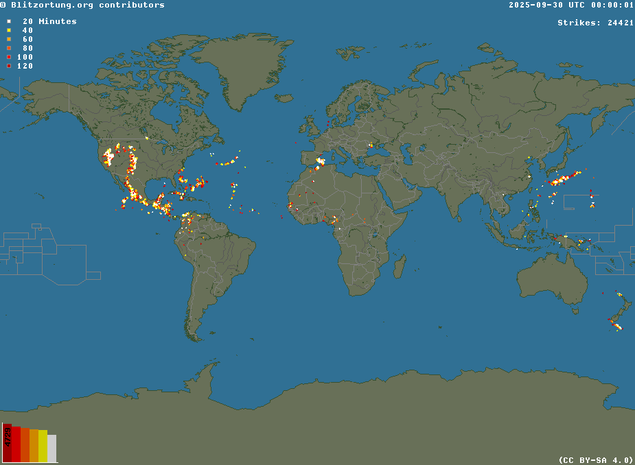

This is the real lightning geography for this case — not a made-up grid. Later steps overlay ERA5 fields on a map with Natural Earth coastlines so you can compare.
Natural Earth 110m coasts · ERA5 ~1° · drag to pan · scroll to zoom · click a cell for a readout.